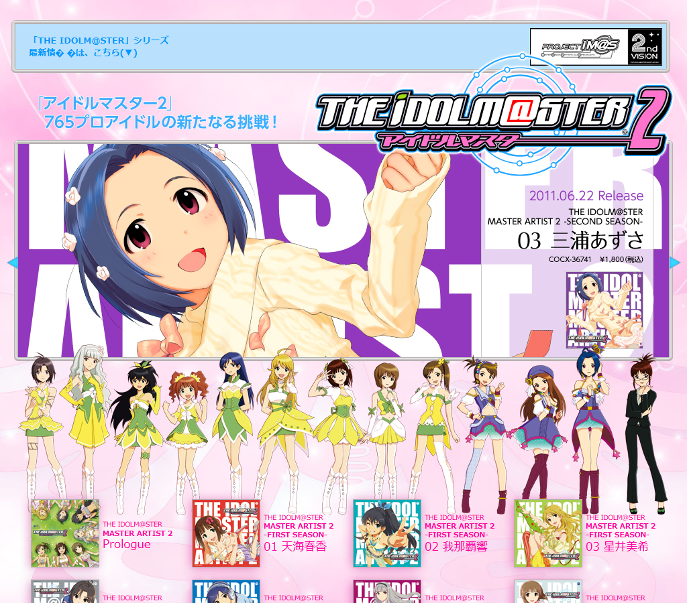
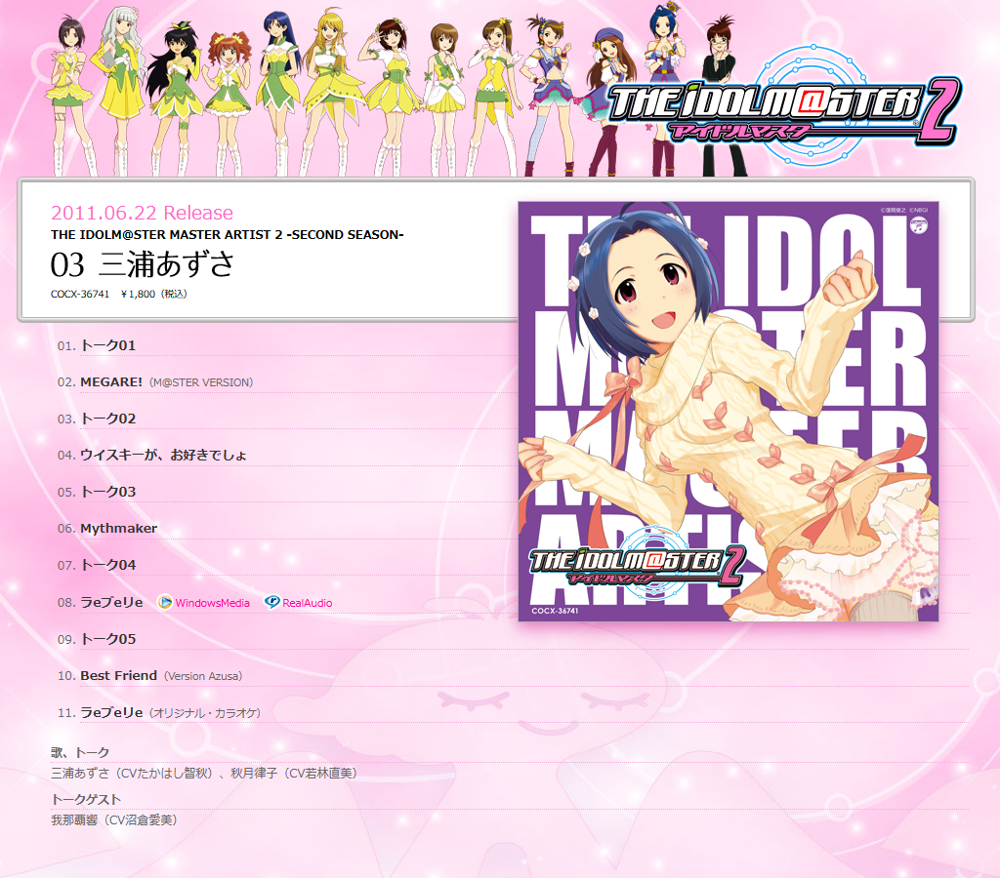
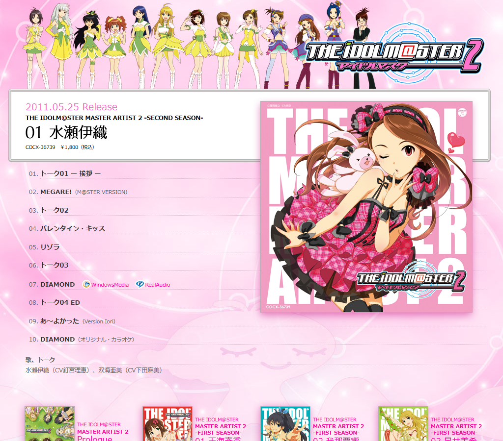
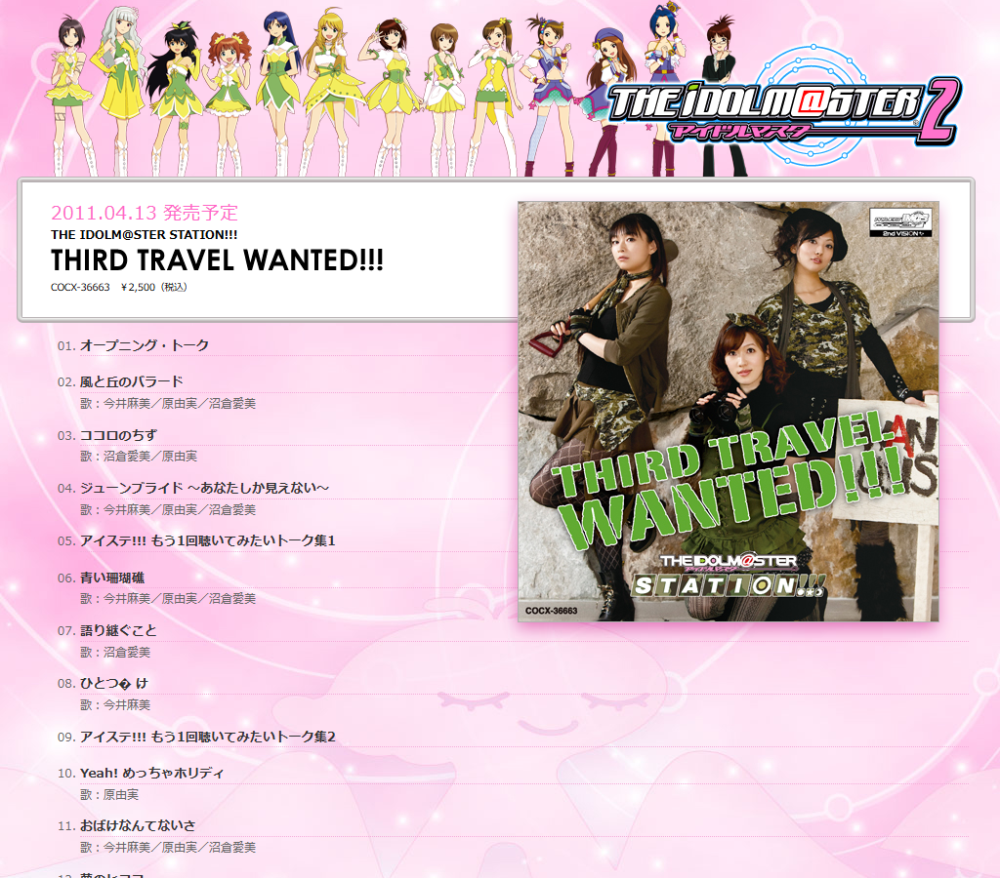
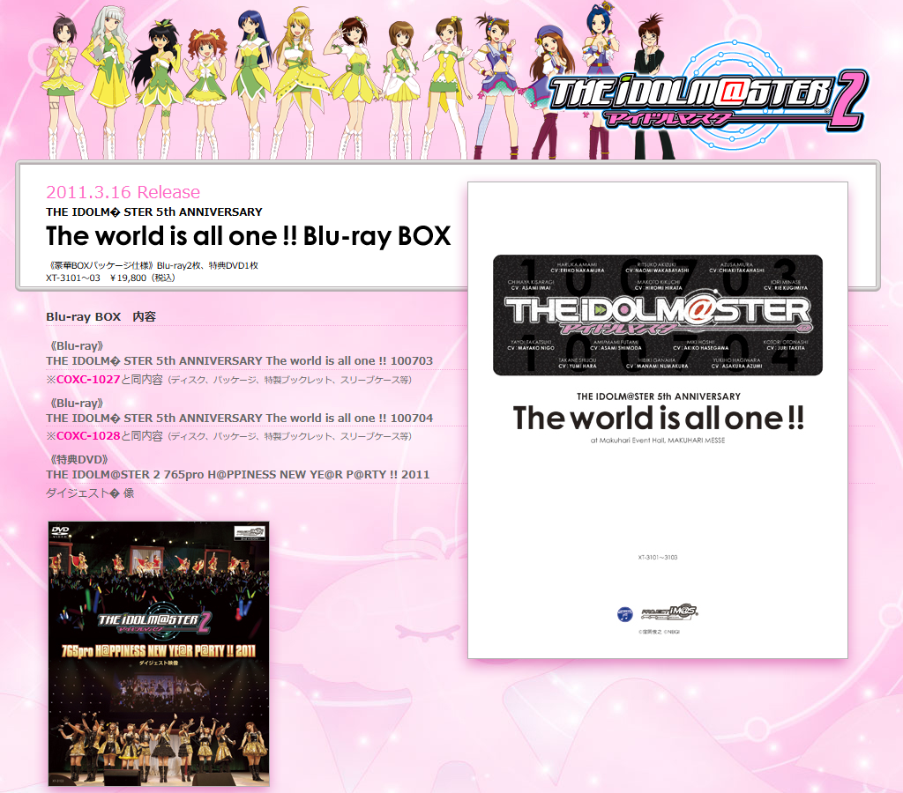
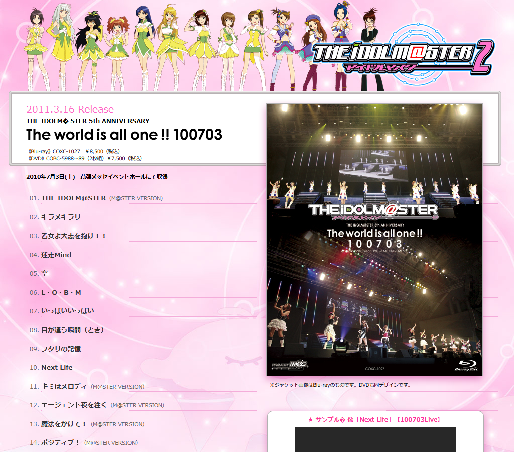
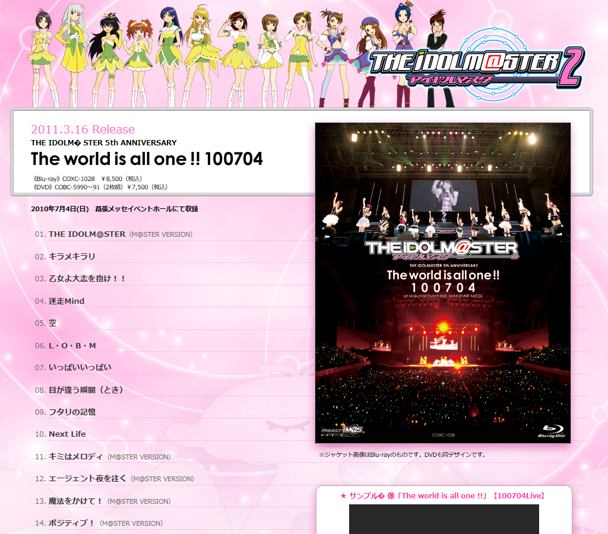
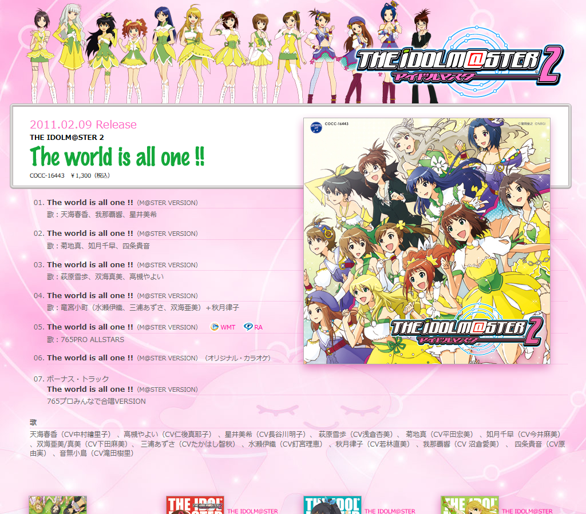

imas2 (columbia) — index + 10 adjacent discography

00-2010-index.html
01-2010-COCX-36741.html02-2010-COCX-36742.html
03-2010-COCX-36739.html04-2010-COCX-36740.html
05-2010-COCX-36663.html
06-2010-XT-3101.html
07-2010-COXC-1027.html
08-2010-COXC-1028.html09-2010-COCC-16442.html
10-2010-COCC-16443.html